Изготовление и применение ферропластов (ферроэластов)
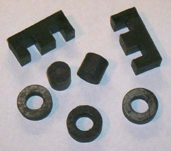
1. Введение
Композиционные магнито-мягкие материалы (Soft Magnetic Composites (SMCs)) по аналогии с магнитопластами [7] могут быть обозначены термином ферропласты, означающим смесь ферромагнитного (магнитомягкого) порошка со связующим. В качестве ферромагнитного порошка чаще всего используется железный порошок, реже - порошки никеля и кобальта или порошок, полученный при размоле магнитомягких ферритов. При использовании в переменных магнитных полях частицы магнитного порошка должны быть токонепроводящими или иметь изолирующее покрытие поверхности (неорганические (оксиды, ферриты, сульфиды, фосфаты, силикаты) или органические диэлектрики (термореактивные полимеры)).
В зависимости от физических свойств связующего полимера ферропласты могут быть жесткими, пластичными (термопластичными) и эластичными (ферроэласты). В качестве связующего полимера могут применяться эпоксидные, фенольные и полиэфирные смолы, термопласты (на основе полиамида, поливинилхлорида, полистирола), эластомеры (винил, нитриловая резина, каучук). Содержание ферромагнитного порошка в исходной смеси, как правило, должно быть максимально возможным и может достигать примерно 90 % (и даже больше) по объему или 98 % по массе. От состава ферромагнитного порошка, его содержания в исходной смеси и технологии обработки зависят магнитные характеристики получаемого ферропласта.
При получении ферропластов из исходной смеси могут использоваться технологии, применяемые для обработки пластмасс и аналогичные технологиям производства магнитопластов [7]: литье под давлением, прессование, экструзия, каландрование.
Преимуществами ферропластов по сравнению с традиционными магнитопроводящими материалами (в основном, сталью) являются более простая, доступная, высокопроизводительная и дешевая технология изготовления, стойкость к коррозии и, соответственно, большой срок службы, возможность изготовления изделий сложной формы с высокой точностью (размеры с допусками по 3 - 4 классу), изотропные магнитные свойства, обеспечивающие конструирование магнитопроводов с трехмерным распределением магнитного потока, достаточно высокая допустимая частота при работе в переменных магнитных полях.
Наиболее известные торговые марки материалов на основе железных порошков для изготовления ферропластов Somaloy, ATOMET, AncorLam, NANOCON, NANOMET.
2. Применение ферропластов
Ферропласты могут находить достаточно широкое применение в различных областях, заменяя собой магнитные системы на основе электротехнической листовой или малоуглеродистой сплошной стали [1 - 5]:
3. Оборудование для изготовления ферропластов
Оборудование, использованное для изготовления и испытаний ферропластов:
4. Измерение насыпной плотности порошка
Насыпная плотность исходного ферромагнитного порошка в большой степени определяет и магнитные свойства конечного изделия. Для измерения насыпной плотности порошка используется тара, объем которой заранее известен, и весы с точностью измерения порядка 1 мг. В качестве тары удобно использовать цилиндрические алюминиевые стаканы, внутренний диаметр которых (DIN и глубина HIN) измеряются с помощью штангенциркуля с точностью не хуже 0.1 мм. По измеренным размерам вычисляется объем стакана V:
Порошок зачерпывается с помощью стакана или насыпается в стакан без уплотнения, верхняя приподнимающаяся над стаканом часть порошка снимается с помощью плоской пластины. Далее порошок высыпается в тару с известной массой и взвешивается на весах (или высыпается непосредственно на чашку весов). Если масса мерного стакана известна, то взвешивать можно непосредственно в нем. Насыпная плотность порошка rP находится через его массу m и объем V:
Если порошок насыпать в измерительный стакан с утряской, то насыпная плотность может получится больше, чем без утряски (примерно на 10 … 15 %).
5. Контроль магнитных свойств магнитомягких порошков
5.1. Капсула для проведения измерений
Для проведения измерений магнитных свойств магнитомягкого порошка его необходимо помещать в капсулу. Исходные требования к капсуле следующие. Размеры капсулы должны соответствовать возможностям применяемых приборов. В то же время количество порошка должно быть достаточным для обеспечения точности измерений. Форма и материал капсулы должны быть такими, чтобы не вносить существенных искажений в результаты измерений и по возможности должны быть близкими к эллипсоиду вращения. С учетом этих требований и имеющихся возможностей было решено использовать капсулу цилиндрической формы, в которую помещалось бы примерно до 500 мг порошка.
Разработанная капсула представляет собой тонкостенный алюминиевый стаканчик цилиндрической формы. Внешний диаметр капсулы 7.5 мм, высота 9 мм. Капсула плотно закрывается пластмассовой крышкой с бортиком диаметром 8 мм. Наличие бортика позволяет укреплять капсулу в установочном отверстии захвата измерительных установок. Внутренний объем капсулы для размещения образца 230 мм3 – цилиндр диаметром 6.5 мм высотой 7 мм. Внешний вид капсулы приведен на рис. 5.1.1.
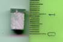
Рис. 5.1.1. Капсула для проведения испытаний магнитных и ферромагнитных порошков.
5.2. Измерение намагниченности весовым методом
В магнитном поле на образец действует сила:
где P – магнитный момент образца, B – магнитная индукция. Для одной координаты z:
Здесь M – намагниченность (магнитный момент единицы объема) образца, зависящая от индукции внешнего магнитного поля, V – объем образца. Для измерения намагниченности весовым методом можно использовать цилиндрический соленоид с центральным отверстием. Разработанный вариант показан на рис. 5.2.1.
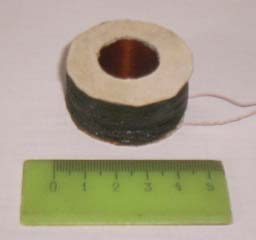
Рис. 5.2.1. Соленоид для измерения намагниченности весовым методом: внешний диаметр соленоида 40 мм, высота 20 мм, диаметр отверстия 20 мм, индуктивность 63 мГн, индукция магнитного поля в центре 60 мТл при токе 1 А.
На оси соленоида имеется точка, при нахождении образца в которой усилие, действующее на него со стороны магнитного поля соленоида, максимально. Таким образом, методика измерений может быть следующей. Капсула с порошком устанавливается на весах, а соленоид, запитанный от источника постоянного или переменного тока, перемещается относительно нее, пока показания весов не достигнут максимума. При испытаниях в постоянном магнитном поле приходилось производить размагничивание порошка в капсуле перед каждой измерительной процедурой. При проведении испытаний в переменном магнитном поле предварительное размагничивание не требовалось, а воспроизводимость результатов была лучше. Величина тока через соленоид была выбрана равной 150 мА (при меньшей величине тока снижается точность измерений, при большей происходит отклонение образца от вертикали). Точность установки тока должна быть максимально возможной, так как зависимость намагниченности от магнитной индукции в диапазоне около 10 мТл приводит к квадратичной зависимости измеряемого усилия от тока. В качестве эталонных образцов может быть выбран порошок карбонильного железа или никеля, в крайнем случае, железные опилки или цилиндрический железный образец.
5.3. Метод измерения магнитных свойств по изменению индуктивности испытательной катушки
Для проведения испытаний была изготовлена измерительная катушка (рис. 5.3.1). Параметры катушки: цилиндрический соленоид наружным диаметром 20 мм высотой 8 мм с внутренним отверстием диаметром 8 мм, индуктивность примерно 100 мГн (L0 = 100.2 мГн на частоте 1000 Гц).
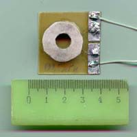
Рис. 5.3.1. Измерительная катушка: индуктивность 100.2 мГн.
Порошок, помещенный в капсулу, размагничивается с помощью демагнетизатора [15]. Затем капсула с порошком помещается внутрь измерительной катушки. Индуктивность измерительной катушки при этом увеличивается в соответствии с содержанием ферромагнитной фракции (например, железа) в порошке. Измерения индуктивности могут проводиться с помощью с помощью цифрового LC-метра, например, VC6243 (частота измерений 1000 Гц). Для сравнения различных образцов рассчитывается параметр (L – L0) / (L0 · m), где L0 – индуктивность измерительной катушки без образца, L – индуктивность измерительной катушки с образцом, m – масса образца (г). В качестве эталонных образцов могут использоваться порошки карбонильного железа или никеля.
5.4. Оптические наблюдения
Порошок рассыпается тонким слоем по куску белой бумаги размером 1 см2, который затем помещался на предметное стекло оптического микроскопа. Для боковой подсветки используются лампы накаливания, люминесцентные лампы, ультрафиолетовые (УФ) светодиоды. Фотографии могут быть сделаны цифровым фотоаппаратом, установленным за окуляром микроскопа. Некоторые результаты показаны на рис. 5.4.1, 5.4.2.
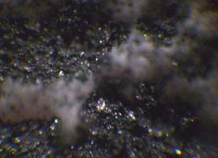
Рис. 5.4.1. Исходный порошок до помола (фотографии с микроскопа с увеличением 8 х 7, слева – подсветка лампой дневного света, справа – УФ-светодиодом).
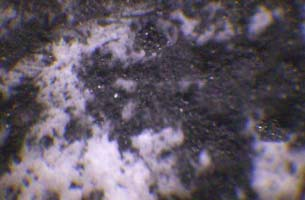
Рис. 5.4.2. Порошок после 15-ти часового помола в шаровой мельнице, размагничивания и однократной сепарации (фотографии с микроскопа с увеличением 8 х 7, слева – подсветка лампой дневного света, справа – УФ-светодиодом).
5.5. Снятие петель гистерезиса
Схема простой установки для получения петель гистерезиса кольцевых сердечников показана на рис. 5.5.1 [13, 14].
Рис. 5.5.1. Схема установки для снятия кривых намагничивания (петель гистерезиса) кольцевых сердечников.
На испытуемый образец наматываются две обмотки. L1 – обмотка возбуждения, с ее помощью внутри образца создается переменное магнитное поле. На обмотку возбуждения подается усиленное с помощью усилителя [13] напряжение синусоидальной формы с генератора сигналов, например, Г3-118. Обмотка L2 – сигнальная. Напряжение с ее выхода, прямо пропорциональное скорости изменения магнитной индукции внутри образца, подается на интегратор, а с него – на вход Y осциллографа, например, UTD2102CEL-R или DSO2D15. Цепь параллельно включенных резисторов R1.1 и R1.2 выполняет роль датчика тока. Напряжение с нее, прямо пропорциональное напряженности магнитного поля внутри образца, подается на вход X осциллографа. Коэффициент преобразования датчика тока можно подстраивать с помощью переменного резистора R1.2. Суммарное сопротивление R1 цепи R1.1 и R1.2 определяется по формуле параллельного включения сопротивлений:
Для удобства снятия показаний суммарное сопротивление цепи датчика тока R1 в Омах должно быть равно напряженности магнитного поля в кольцевом сердечнике в Эрстедах при возбуждающем токе в 1 А.
Роль интегратора в самом простом исполнении может выполнять RC-цепь (R2C1), включенная по схеме фильтра нижних частот (ФНЧ). Выбор частоты среза ФНЧ определяется частотой измерений. Испытательные частоты должны соответствовать рабочему диапазону обмотки возбуждения феррозонда: 1 кГц, 2 кГц, 5 кГц, 10 кГц, 15 кГц, 20 кГц, поэтому желательно выбрать частоту среза ФНЧ ниже 100 Гц. Частота среза fC RC-цепи ФНЧ определяется по формуле:

Отсюда при заданном значении частоты среза fC и величине сопротивления R можно найти емкость C:

Или, наоборот, через частоту среза и емкость вычислить требуемое сопротивление:

Например, для цепи ФНЧ R2C1 при R2 = 1.5 кОм и C1 = 5 мкФ:
Напряженность возбуждаемого обмоткой, содержащей NE витков, с током I магнитного поля HE внутри кольца внешним диаметром D2 с отверстием диаметром D1 может быть определена по формуле:

Сигнальная обмотка, содержащая NS витков, генерирует электрический сигнал, электродвижущая сила (ЭДС) которого определяется законом электромагнитной индукции Фарадея [6]:
Здесь H - высота кольца.
В предположении, что магнитная индукция B изменяется по гармоническому закону B = B0 cos w t (что является довольно грубым приближением), где B0 – амплитуда магнитной индукции, w – циклическая частота, t – время:
Амплитуда ЭДС E0:
Отсюда:
После прохождения через ФНЧ уровень сигнала U снижается линейно с частотой (когда частота существенно больше частоты среза ФНЧ):
Для амплитуд без учета фазовых сдвигов:


Тогда, выражая амплитуду магнитной индукции B0 через амплитуду напряжения на выходе ФНЧ U0:
С учетом того, что на частотах существенно выше частоты среза ФНЧ емкостное сопротивление фильтра существенно меньше активного, можно это выражение упростить:
С помощью данной формулы можно перевести цену деления измерителя напряжений (вольтметра, осциллографа) в единицы магнитной индукции.
При максимальных значениях возбуждающего тока получаемые значения B0 можно рассматривать, как индукцию насыщения кольцевого образца BS. Она может быть выражена через максимальное значение сигнала по оси Y осциллографа US:
Или для конкретного случая RC = R2C1:
С учетом соотношения между магнитной индукцией B и напряженностью магнитного поля HE в образце (без учета размагничивающего фактора, который в магнитомягком кольце при кольцевом возбуждении, как правило, невелик):

где m0 = 4 p ∙ 10-7 Гн/м – магнитная постоянная, а m – магнитная проницаемость материала образца, можно вычислить магнитную проницаемость для участка петли гистерезиса, где изменению напряженности возбуждающего поля DHE соответствует изменение магнитной индукции DB:

В качестве DB и DHE можно взять разницу значений магнитной индукции и напряженности магнитного поля, соответствующих вершинам петли гистерезиса, когда достигается состояние магнитного насыщения образца.
Если магнитная индукция измеряется в Гауссах, а напряженность магнитного поля в Эрстедах (система СГС), то магнитная проницаемость может быть найдена как отношение приращения магнитной индукции к вызвавшему его приращению напряженности магнитного поля.
6. Способы получения магнитомягкого порошка
Основное применение находят магнитомягкие порошки железа, которые могут быть получены различными способами, например:
Аналогичными способами могут быть получены порошки и других ферромагнитных материалов - никеля, кобальта.
Для отсеивания различных фракций порошка используются сита, изготовленные из имевшихся в наличии сетчатых материалов. Характеристики сит приведены в таблице 6.1. Могут также использоваться стандартные сита с похожими характеристиками.
Таблица 6.1. Характеристики сит для отсеивания фракций магнитомягких порошков.
| Условное обозначение сита | Примерное количество отверстий на 1 см2 | Площадь отверстия, не более, мм2 | Предназначение |
| N 0 | 2.4 | 42 | Отсеивание кускового материала для последующего дробления. |
| N 1 | 28 | 3.6 | Отсеивание материала от мусора для последующей сепарации. |
| N 1.5 | 130 | 0.77 | Отсеивание материала для последующей сепарации, помола или окончательного использования. |
| N 2 | 500 | 0.2 | Отсеивание материала для окончательного использования. |
Для разделения магнитной и немагнитной составляющих порошка использован магнитный сепаратор [16], показанный на рис. 6.1. Сепаратор представляет из себя многополюсный постоянный магнит, заключенный в немагнитный корпус. При опущенной рукоятке магнит сепаратора достигает днища корпуса с внутренней стороны, при этом магнитная составляющая порошка притягивается к днищу корпуса сепаратора с внешней стороны. Чтобы сбросить порошок, рукоятку сепаратора необходимо вытянуть и при необходимости покрутить.
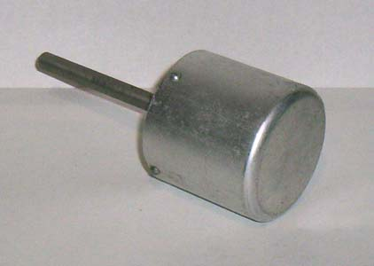
Рис. 6.1. Магнитный сепаратор: диаметр 65 мм.
При проведении работ с порошками было обнаружено, что в ряде случаев при проведении измерений или в технологических процессах требуется процедура их размагничивания (демагнетизация). Для ее проведения был разработан и изготовлен демагнетизатор [15] в виде залитого в эпоксидный компаунд электромагнита с разомкнутым сердечником, работающего от сети переменного тока напряжением 220 В частотой 50 Гц (рис. 6.2).
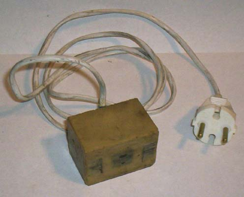
Рис. 6.2. Демагнетизатор для размагничивания образцов магнитомягкого порошка.
5.1. Магнитомягкий порошок из опилок после резки стали
5.1.1. Исходный материал – стальные опилки после резки малоуглеродистой стали Ст3 или Ст10 (а также и любой другой) углошлифовальной машиной, подвергнутые трехкратной магнитной сепарации с отсеиванием на сите N 1. Остатки с сита N 1 можно использовать для обжига в печи (ферритизация).
5.1.2. Опилки для помола (галтовки) в шаровой микромельнице получаются отсеиванием на сите N 1.5 с последующей магнитной сепарацией. Остаток с сита N 1.5 (обозначение N 1 – N 1.5) используется впоследствии для размола и повторения операции по п. 5.1.2.
5.1.3. Отсеянный на сите N 1.5 (и отсепарированный) порошок подвергается 24 часовому (примерно сутки) помолу (галтовке) в шаровой микромельнице (загрузка по 100 г в барабан, при меньшей загрузке получается более рыхлая фракция с меньшей насыпной плотностью). Далее производится неполный отсев на сите N 2 (примерно 70 … 80 % от намолотого объема). После этого желательно, но необязательно, провести однократную магнитную сепарацию. Измеряется насыпная плотность порошка. Она должна быть не менее 2.4 г/см3 (желательно ближе к 2.5 г/см3, часто получается до 2.7 г/см3).
5.1.4. Неотсеянный порошок смешивается с отсеянным на сите N 1.5 для последующей галтовки по п. 5.1.3.
5.1.5. Перед изготовлением ферропластов можно необходимое количество полученного порошка еще раз отсеять на сите N 2, отсепарировать магнитным сепаратором и подвергнуть дополнительной галтовке не менее 24 часов (сутки) для увеличения доли более мелких частиц и повышения плотности спрессованного изделия.
5.2. Магнитомягкий порошок из стальных опилок и стружки после отжига
5.2.1. Исходный материал - стальные опилки после резки малоуглеродистой стали Ст3 или Ст10 углошлифовальной машиной, оставшиеся после отсеивания на сите N 1, и стальная стружка после сверления тех же марок стали помещаются в огнеупорную емкость и подвергаются отжигу в дровяной печи в течение 2 … 3 часов. Далее производится первичное размельчение в емкости деревянным пестиком. После этого производится двухкратная магнитная сепарация.
5.2.2. Получившийся размельченный материал подвергается 24-часовому перемалыванию в шаровой мельнице. После перемалывания производится отсеивание на сите N 1.5. Остатки от отсеивания вновь возвращаются на стадию отжига (п. 5.2.1).
5.2.3. Отсеянный на сите N 1.5 по п. 5.2.2 материал подвергается дальнейшему 24-часовому перемалыванию в шаровой мельнице и отсеиванию на сите N 2. В результате получается порошок с насыпной плотностью примерно 1.7 г/см3. Неотсеянный материал возвращается на стадию повторного помола по п. 5.2.2.
5.3. Магнитомягкий порошок на основе магнитомягкого феррита
5.3.1. Исходный материал - лом изделий из магнитомягких ферритов различных марок (можно в партию подбирать сходные марки) подвергается дроблению с помощью стальной ступки и пестика.
5.3.2. Получившийся размельченный материал просеивается через сито N 1.5. Неотсеянная часть подвергается повторному дроблению по п. 5.3.1.
5.3.3. Отсеянная часть перемалывается в шаровой микромельнице в течение 24-х часов и просеивается через сито N 2. Отсеянная часть представляет собой готовый порошок с насыпной плотностью примерно 2.05 г/см3. Неотсеянная часть возвращается на стадию повторного помола по п. 5.3.2.
6. Способы изготовления и образцы ферропластов
При изготовлении ферропластов применяются технологии, аналогичные используемым при производстве магнитопластов [7]. Магнитомягкие порошки, используемые для изготовления ферропластов, должны иметь достаточно высокую насыпную плотность. В случае железного порошка желательно не менее 2.0 г/см3, лучше 2.4 ... 3.1 г/см3. Порошок из магнитомягких ферритов может иметь насыпную плотность примерно 2.0 г/см3. Низкая насыпная плотность может свидетельствовать о высокой доле немагнитной составляющей в порошке, что ухудшает магнитные свойства конечного изделия.
6.1. Прессование с тепловой обработкой (эпоксидная смола в качестве связующего)
Способ изготовления ферропластов методом прессования с одновременной тепловой обработкой описан на примере изготовления колец типоразмера К30х16хH (H - высота кольца, обычно близка к 10 мм). С помощью колец удобно снимать петлю гистерезиса (п. 5.5), кроме того, кольцевые сердечники могут находить практическое применение. На рис. 6.1.1 показан эскиз пресс-формы для изготовления колец указанного типоразмера, на рис. 6.1.2 - фотография ее деталей, а на рис. 6.1.3 - пресс-форма в сборе. Все детали сделаны из малоуглеродистой стали марки Ст3. Пресс-форма состоит из цилиндрического корпуса с отверстием, в котором размещается вставка со вдетым в нее центральным стержнем. На него надевается плунжер. Смесь для прессования помещается в кольцевой зоне между вставкой и плунжером. Пресс-форма с установленными сверху и снизу квадратными стальными плитами толщиной 10 мм помещается в рабочую зону пресса [11] с максимальным усилием не менее 20 тонн.
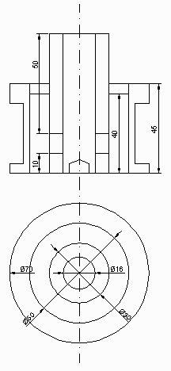
Рис. 6.1.1. Эскиз пресс-формы для изготовления колец типоразмера К30х16хH.
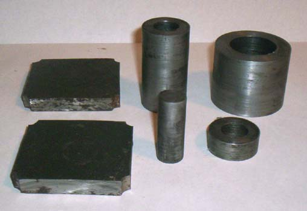
Рис. 6.1.2. Детали пресс-формы для изготовления колец типоразмера К30х16хH.
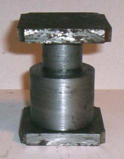
Рис. 6.1.3. Пресс-форма для изготовления колец типоразмера К30х16хH в сборе.
Для нагрева пресс-формы в процессе прессования используется нагреватель (рис. 6.1.4), который одевается на пресс-форму (рис. 6.1.5). Корпус нагревателя сделан из эпоксидной смолы, в качестве нагревательного элемента используется намотанная на корпус нихромовая проволока, защищенная снаружи стеклотканью и подключенная к внешнему разъему для соединения с блоком питания. Рабочая температура нагревателя (и пресс-формы) примерно 100 0C. При применении нагревателя используется дополнительная термоизоляция между пресс-формой и прессом (между стальными плитами пресс-формы и рабочими плитами пресса вставляются теплоизолирующие фанерные или картонные прокладки).
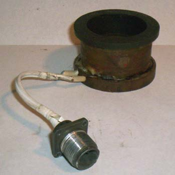
Рис. 6.1.4. Нагреватель пресс-формы для изготовления колец типоразмера К30х16хH.
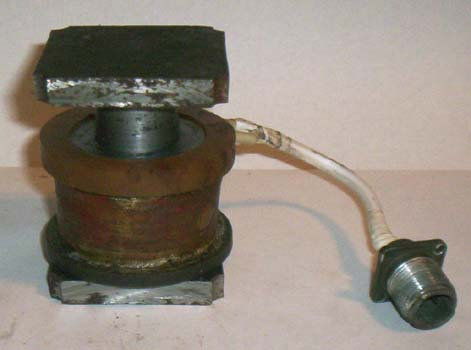
Рис. 6.1.5. Пресс-форма для изготовления колец типоразмера К30х16хH в сборе с нагревателем.
Схема электрическая принципиальная блока питания нагревателя пресс-формы приведена на рис. 6.1.6, а его внешний вид - на рис. 6.1.7. Прибор состоит из силового понижающего трансформатора T1, первичная обмотка которого подключается к сети переменного тока напряжением 220 В частотой 50 Гц через предохранитель FU1 с помощью выключателя S1. Рабочее напряжение вторичной обмотки, определяющее температуру нагрева пресс-формы, выбирается переключателем S2. Светодиод HL1, подключенный к выходным клеммам с помощью цепи R1VD1 выполняет роль индикатора включения.
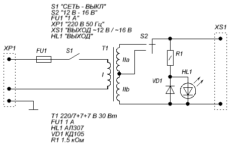
Рис. 6.1.6. Схема электрическая принципиальная блока питания нагревателя пресс-формы.
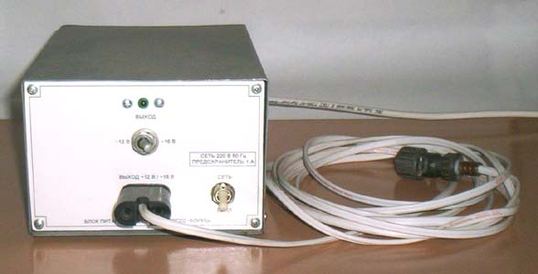 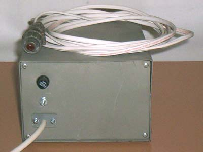
Рис. 6.1.7. Внешний вид блока питания нагревателя пресс-формы спереди и сзади.
В качестве магнитомягкого порошка при изготовлении колец использовался железный порошок или порошок магнитомягких ферритов. Изделия из разных порошков делаются по сходной технологии.
На изготовление кольца типоразмера К30х16х10 из железного порошка используется 25 + 0.25 г железного порошка из молотых стальных опилок (см. п. 5.1) с насыпной плотностью примерно 2.4 ... 2.5 г/см3, 0.25 г стеариновой кислоты, 1.0 г эпоксидной смолы (например, ЭД-20), 0.15 г отвердителя (например, ПЭПА), 0.5 г ацетона. Стеариновая кислота снижает внутреннее трение, облегчает прессование и позволяет получать изделия с большей плотностью. Эпоксидная смола с отвердителем служит в качестве связующего, а ацетон - разжижителя, для улучшения однородности смеси. Содержание магнитомягкого порошка в смеси составляет примерно 95 % по массе (ацетон не учитывается, так как впоследствии испаряется).
Пресс-форма смазывается густой смазкой (солидол, литол). На поверхности, на которые будут приходиться торцы кольца, кладутся промасленные бумажные кольца для облегчения впоследствии отрыва и предотвращения разлома кольца.
Для снижения внутреннего трения при прессовании железный порошок смешивается с предварительно растертой стеариновой кислотой. Эпоксидная смола замешивается с отвердителем, затем полученная смесь разбавляется ацетоном и размешивается до получения однородной массы. В нее засыпается смесь железного порошка со стеариновой кислотой, перемешивается до однородного состояния в смеси со смолой и просушивается в течение пятнадцати - тридцати минут.
Полученная смесь закладывается в пресс-форму, уплотняется и прессуется под усилием до 20 тонн с одновременным подогревом до температуры примерно 100 0C (напряжение питания нагревателя пресс-формы 16 В) в течение примерно двух часов. Далее следует охлаждение в течение примерно 1 часа. В результате получается кольцо толщиной около 10 мм. Если толщину кольца необходимо изменить, то в соответствующей пропорции следует изменить количество исходных материалов. Параметры одного из колец, показанного на рис. 6.1.8: толщина 9.7 мм, масса 25.44 г, плотность примерно 5.19 г/см3. Так как поверхность частиц железного порошка не покрывалась предварительно изолирующим материалом, удельное электрическое сопротивление кольца довольно низкое, поэтом оно может применяться в постоянных или весьма низкочастотных (порядка 1 Гц) магнитных полях.
Изготовленное аналогичным способом похожее кольцо из порошка, полученного из отожженных опилок и стружек (см. п. 5.2), с насыпной плотностью 1.7 г/см3 имеет плотность после прессования примерно 4.05 г/см3. Магнитные свойства соответственно хуже, чем при применении железного порошка с более высокой насыпной плотностью.
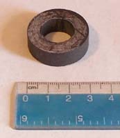
Рис. 6.1.8. Кольцо типоразмера К30х16х9.7 из железного порошка.
На изготовление кольца примерно того же типоразмера из порошка магнитомягкого феррита использовано 25 г порошка магнитомягкого феррита (см. п. 5.3) с насыпной плотностью примерно 2.0 ... 2.05 г/см3, 0.25 г стеариновой кислоты, 1.0 г эпоксидной смолы (например, ЭД-20), 0.15 г отвердителя (например, ПЭПА), 1 г ацетона.
Пресс-форма смазывается густой смазкой (солидол, литол). На поверхности, на которые будут приходиться торцы кольца, кладутся промасленные бумажные кольца для облегчения впоследствии отрыва и предотвращения разлома кольца.
Ферритовый порошок смешивается с предварительно растертой стеариновой кислотой. Эпоксидная смола замешивается с отвердителем, затем полученная смесь разбавляется ацетоном и размешивается до получения однородной массы. В нее засыпается смесь ферритового порошка со стеариновой кислотой и перемешивается до однородного состояния в смеси со смолой. Полученный состав просушивается в течение пятнадцати - тридцати минут.
Полученная смесь закладывается в пресс-форму, уплотняется и прессуется под усилием до 20 тонн с одновременным подогревом до температуры примерно 100 0C (напряжение питания нагревателя пресс-формы 16 В) в течение примерно двух часов. Далее производится охлаждение в течение примерно 1 часа. В результате получается кольцо толщиной около 12 мм. Параметры одного из колец, показанного на рис. 6.1.9 справа: толщина 12.0 мм, масса 24.41 г, плотность примерно 4.02 г/см3. В силу высокого удельного электрического сопротивления магнитомягкого феррита кольцо может применяться в переменных магнитных полях достаточно высокой частоты (десятки килогерц), в частности, в импульсных трансформаторах.
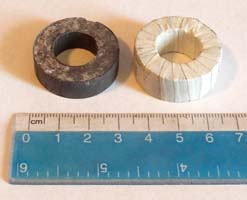
Рис. 6.1.9. Кольца типоразмера К30х16х9.5 и К30х16х12 (обмотано изолентой) из порошка магнитомягкого феррита.
6.2. Выдавливание предварительно нагретой исходной смеси в литьевую форму (ПВХ в качестве связующего)
Исходный магнитомягкий материал - порошок из молотых стальных опилок с насыпной плотностью примерно 2.4 ... 2.5 г/см3. Порошок совместно с гранулами поливинилхлорида (соотношение по массе 4 : 1) засыпался в литьевую установку [8]. Далее смесь нагревалась примерно до 300 0C, тщательно перемешивалась мешалкой и выдавливалась в литьевую форму, которая затем остужалась на воздухе или в воде, разбиралась, и из нее извлекалась полученная деталь.
Пример литьевой формы для изготовления цилиндров диаметром 20 мм высотой 20 мм показан на рис. 6.2.1, 6.2.2. Форма состоит из двух стягиваемых болтами стальных плит с технологическими отверстиями. Между плитами помещается стальная цилиндрическая труба с размерами, соответствующими размерам отливаемой детали.
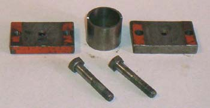
Рис. 6.2.1. Детали литьевой формы для изготовления цилиндров типоразмера D20xH20.
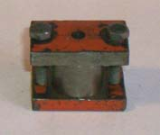
Рис. 6.2.2. Литьевая форма для изготовления цилиндров типоразмера D20xH20 в сборе.
Внешний вид цилиндра из ферропласта показан на рис. 6.2.3. Плотность полученной детали составляла примерно 2.7 ... 2.8 г/см3., т. е. не сильно отличалась от насыпной плотности исходного порошка. Соответственно, магнитные свойства были довольно слабыми.
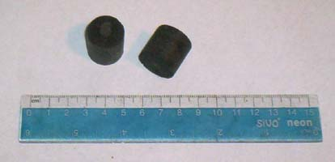
Рис. 6.2.3. Цилиндры из ферропласта (смесь железного порошка и ПВХ в соотношении 4:1). Диаметр 20 мм, высота 20 мм.
На рис. 6.2.4 и 6.2.5 показана литьевая форма для изготовления Ш-образных сердечников дросселей типоразмера Ш16х16. Она состоит из внутренней рамки с перегородками, технологическими и крепежными отверстиями. Снаружи рамка закрывается стальными плитами, которые крепятся с помощью винтов.
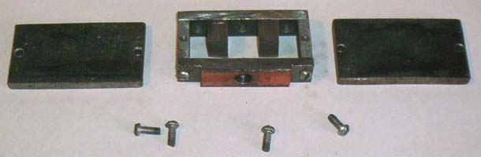
Рис. 6.2.4. Детали литьевой формы для изготовления сердечников дросселей типоразмера Ш16x16.
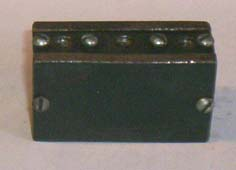
Рис. 6.2.5. Литьевая форма для изготовления сердечников дросселей типоразмера Ш16x16 в сборе.
Внешний вид двух половин сердечника показан на рис. 6.2.6. Сердечники применялись в качестве магнитопроводов при изготовлении дросселей тиристорных регуляторов мощности [9].
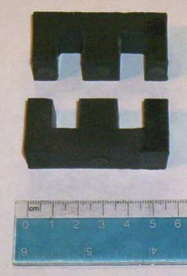
Рис. 6.2.6. Ш-образные сердечники из ферропласта (смесь железного порошка и ПВХ в соотношении 4:1). Типоразмер Ш16х16.
7. Заключение
Разработаны несложные технологии получения магнитомягких порошков различных составов и изготовления магнитопроводящих деталей из ферропалстов для конкретного практического применения. Продолжается работа по усовершенствованию способов изготовления ферропалстов и повышению их свойств.
Ссылки:
28.12.2024
Альтернативные источники
энергии
Компьютеры и
Интернет
Магнитные поля
Механотронные системы
Перспективные
разработки
Электроника и
технология